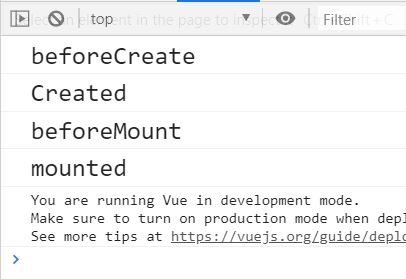
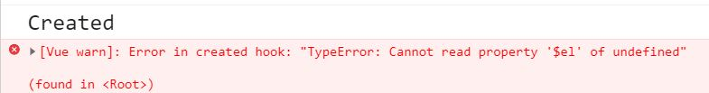
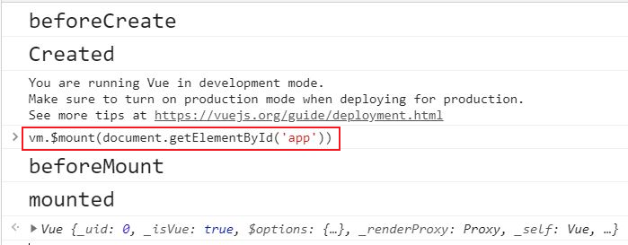
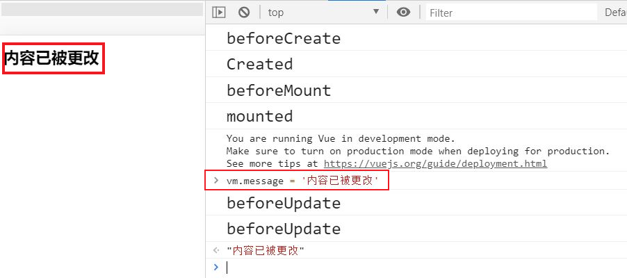

Vue生命周期是指vue实例对象从创建之初到销毁的过程，vue所有功能的实现都是围绕其生命周期进行的，在生命周期的不同阶段调用对应的钩子函数可以实现组件数据管理和DOM渲染两大重要功能。
- vue生命周期
- 代码详解

vue生命周期
每个 Vue 实例在被创建时都要经过一系列的初始化过程——例如，需要设置数据监听、编译模板、将实例挂载到 DOM 并在数据变化时更新 DOM 等。同时在这个过程中也会运行一些叫做生命周期钩子的函数，这给了用户在不 同阶段添加自己的代码的机会。
如下是Vue生命周期的所有钩子函数
beforeCreate(创建前)
created(创建后)
beforeMount(挂载前)
mounted(挂载后)
beforeUpdate(更新前)
uptaded(更新后)
beforeDestory(销毁前)
destoryed(销毁后)
代码详解
测试代码
1 |
|
控制台输出结果

通过控制台的输出结果可以看到vue实例创建的过程中调用的钩子函数以及顺序
beforeCreate(创建前)
（beforeCreate钩子函数）在实例初始化之后，数据观测（data observer）和 event/watcher 事件配置之前被调用，此时的数据观察和事件机制都未形成，不能获得DOM节点。
created(创建后)
在这个阶段vue实例已经创建，但仍然不能获取DOM元素。
数据已经和data属性进行绑定（可以改变data属性的值，但不会触发其他钩子函数，可以在这里对初始数据的获取。）
注意
如果要在此阶段中进行dom操作，就要将操作都放在 Vue.nextTick() 的回调函数中，因为created() 钩子函数执行的时候 DOM 其实并未进行任何渲染，而此时进行 DOM 操作无异于徒劳，所以此处一定要将 DOM 操作的 js 代码放进 Vue.nextTick() 的回调函数中。
我们在created钩子函数中加入如下语句
1 | console.log("%c%s", "font-size:20px",vm.$el.textContent) |

用Vue.nextTick将操作dom元素的语句放进其回调函数中就有效果。
beforeMount(载入前)
在这个阶段首先判断vue实例中有没有el选项，有则继续编译，否则停止生命周期，直到vue实例上调用vm.$mount(el)
如果有el，再判断是否有template参数，有则将其当作模板编译成render函数，否则把外部HTML作为模板编译。template中的模板优先级高于outer HTML模板。
调用vm.$mount(el)

在控制台里调用vm.$mount(el)之后生命周期则继续
测试优先级的代码
1 | <div id="app"> |
当render函数存在时，页面显示
当render函数注释掉，template存在时，页面显示
当把render函数和template注释掉时，页面显示
综合排名优先级：render函数选项 > template选项 > outer HTML
mounted(载入后)
载入后html已经渲染(ajax请求可以放在这个函数中)，把vue实例中的data里的message挂载到BOM节点中去
实例被挂载后调用，这时 el 被新创建的 vm.$el 替换了。如果根实例挂载到了一个文档内的元素上，当 mounted 被调用时 vm.$el 也在文档内。
beforeUpdate(更新前)和updated(更新后)
当vue发现data中的数据发生了改变，会触发对应组件的重新渲染，先后调用beforeUpdate和updated钩子函数。
更改data数据输出结果

beforeDestroy(销毁前)
实例销毁之前调用。在这一步，实例仍然完全可用。
destroyed(销毁后)
实例销毁后调用。该钩子被调用后，对应 Vue 实例的所有指令都被解绑，所有的事件监听器被移除，所有的子实例也都被销毁。